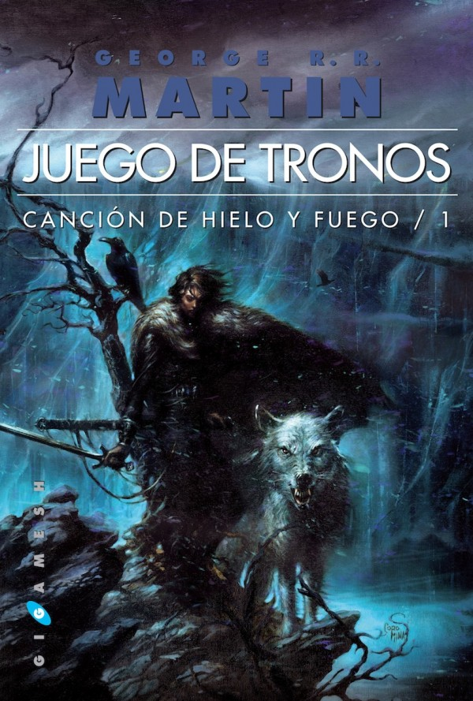
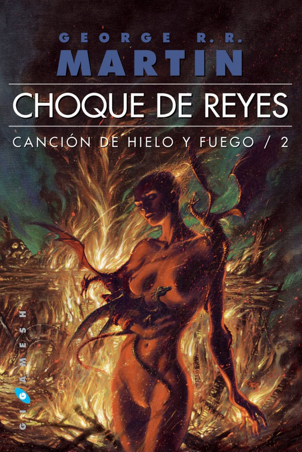
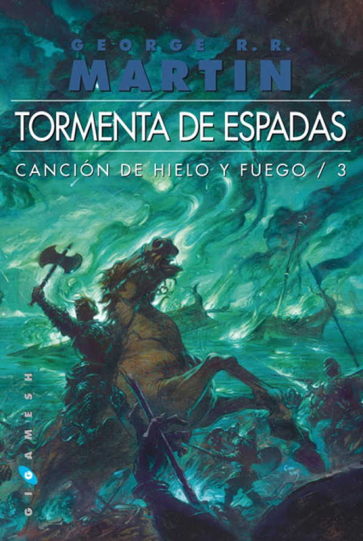
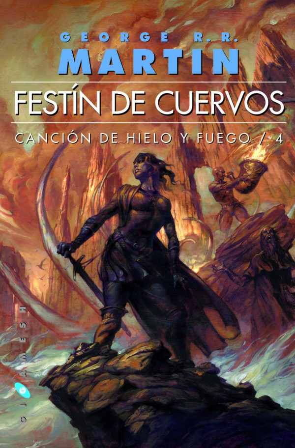
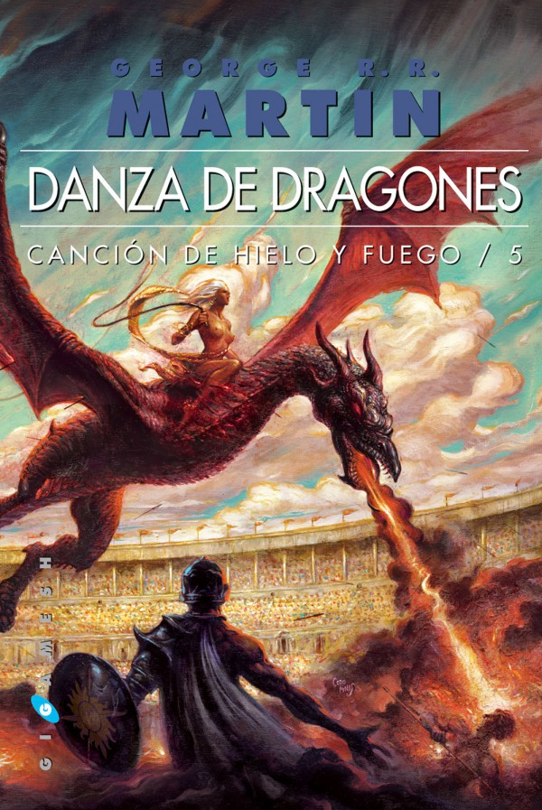

Los libros
Serie Canción de hielo y fuego (A Song of Ice and Fire, desde 1996; 5 obras publicadas de un total de 7).
Títulos publicados:
-  Juego de tronos (A Game of Thrones, 1996), publicada por Gigamesh en 2002.
-  Choque de reyes (A Clash of Kings, 1998), publicada por Gigamesh en 2003.
-  Tormenta de espadas (A Storm of Swords, 2 vols. 2000), traducciónde Cristina Macía, publicada por Gigamesh en 2005.
-  Festín de cuervos (A Feast for Crows, 2005), publicada por Gigamesh en 2007.
-  Danza de dragones (A Dance with Dragons, 2011), publicada por Gigamesh en 2012.
Futuros títulos de esta serie serán:
- Vientos de invierno (The Winds of Winter), sexta obra de la serie, prevista para 2018.
- Sueño de primavera (A Dream of Spring), séptima y última obra de la serie.
A la serie principal se suman tres relatos cortos que actúan como precuelas, ya que se desarrollan en el mismo mundo, pero aproximadamente noventa años antes. Estas son The Hedge Knight (El caballero errante), The Sworn Sword (La espada leal), y The Mystery Knight (El caballero misterioso); en conjunto se las conoce como Dunk and Egg Tales (Cuentos de Dunk y Egg).
Los dos primeros relatos han aparecido traducidos al castellano en libros que recopilan relatos cortos de fantasía, a saber, "El caballero errante" en "Leyendas negras - Vol. I" (editorial DeBolsillo, 2000), y "La espada leal" en "Leyendas" (editorial La factoría de ideas, 2006) y en "La Espada Leal" (reedición con nombre distinto del libro anterior, editorial La factoría de ideas, 2012). En 2015 fueron recopilados los tres relatos en el libro El caballero de los Siete Reinos (Plaza & Janés, 2015). Los mismos dos primeros relatos han sido trasladados con éxito al cómic y se puede encontrar en dos volúmenes editados por DeBolsillo (previamente fueron publicados en seis volúmenes por Devir). The Mystery Knight fue finalista en 2011 del World Fantasy Award.
La saga se complementa con The World of Ice and Fire (El mundo de hielo y fuego), un libro que cuenta la historia de Poniente narrada desde la perspectiva de varios maestres, escrito por Martin, Elio M. García jr y Linda Antonsson.
Adicionalmente hay otras novelas pequeñas, la primera se titula "La princesa y la Reina" la cual narra con detalle lo ocurrido en la "Danza de los dragones" esta se menciona en el mundo de hielo y fuego pero aqui ponen mas detalle en las mas de 80 paginas. La siguiente es llamada en el idioma original "The rogue prince" que narra un poco lo sucedido antes de la danza de los dragones, es sobre el hermano del rey de ese entonces, Daeron targaryen, hermano del Rey Viserys I.
En octubre del 2018 saldra una nueva novela llamada "Sons of Dragon" que narrará parte de la vida de los hijos de Aeron Targaryen "el conquistador": Aenys Targaryen y Maegor Targaryen conocido como "Maegor el cruel".
Varios capítulos de las novelas principales se han recopilado previamente a la publicación y como avances promocionales de los libros a los cuales pertenecen. Estos son:
- Sangre de dragón
- Basado en los capítulos sobre Daenerys en Juego de tronos. Recibió el Premio Hugo de 1997.
- Hijos del kraken
- Cuatro capítulos de Festín de cuervos que transcurren en las Islas del Hierro. No debe leerse sin haber terminado Tormenta de espadas. Se comentan aspectos importantes de la trama que trascurren al final del tercer libro.
- Camino de dragón
- Novela corta adelanto de Tormenta de espadas.
- Dominio de dragones
- Los tres primeros capítulos de Daenerys en Danza de dragones. Pueden leerse sin haber leído Festín de cuervos pues no revela nada de la trama de este último libro.
Estos cuatro avances han sido editados por Ediciones Gigamesh fuera de colección y repartidos gratuitamente en ocasiones especiales. Por ejemplo, Dominio de dragones se lanzó con motivo de la fiesta del Día del Libro del año 2006. Ninguno de estos volúmenes está a la venta.